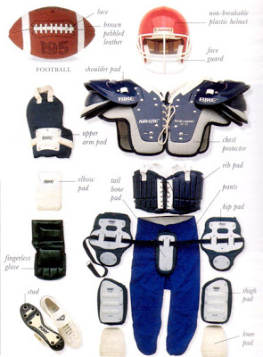

Egy játékosnak több felszerelésre is szüksége van a testi éppségének megóvásához.
| Fej rész |
|---|
A fejnek a megóvásához a játékosoknak kötelezően sisakot kell viselniük ami párnázott, fül és áll védővel is el van látva.Ezen kívül fogvédőt is kell viselniük. |
| A felső testrész |
|---|
A felső testrész megóvásához műanyagból készült vállvédőt használnak, amik védika játékosk mellkasát és vállaikat. Ezekből több féle van a pisztoknak megfelelően.Ugyanígy protektoros kesztyűt viselnek ugyanúgy posztnak megfelelően. |
| A test alsó része |
|---|
A játkosok nak protektoros nadrágot kell viselniük, a nadrágokban általába kerámia protektorokat teszbnek, ezek ki vehetőek és vissza tehetőek. Emelett a boka védelmében magasított szárú stoplis cipőt.Emellet még szuszpenzort is ajánlott viselni. |
